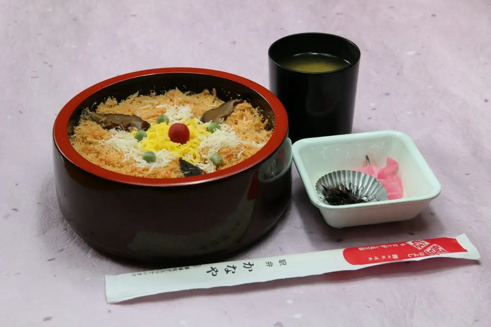
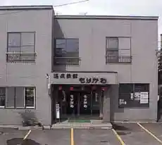
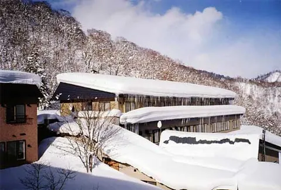
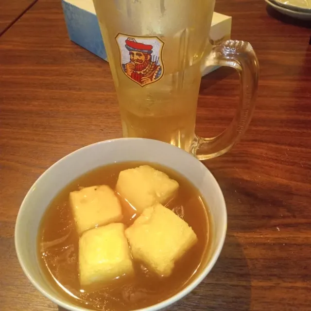
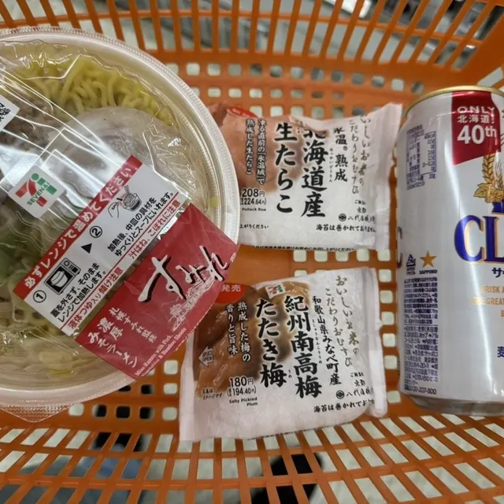
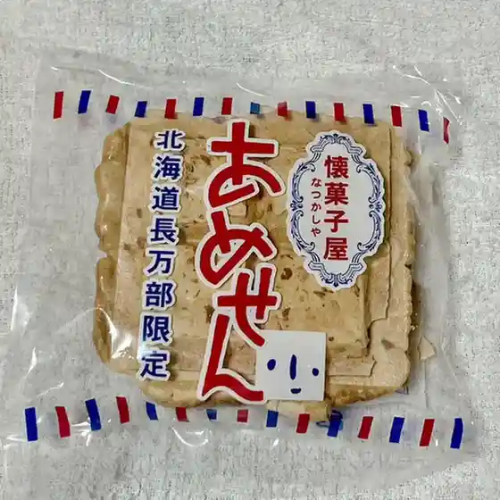
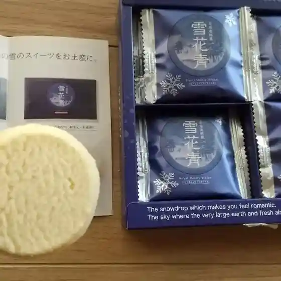
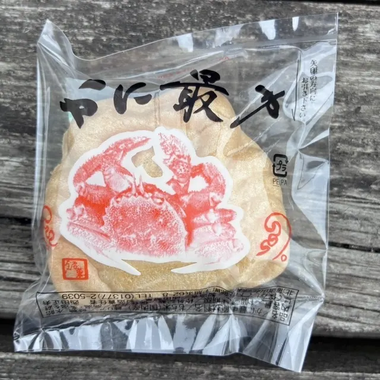
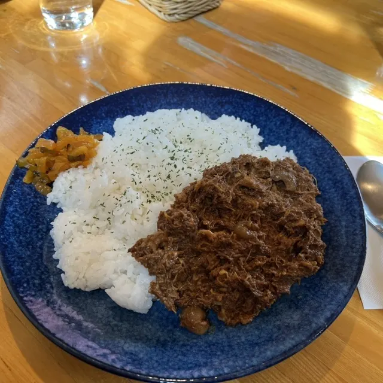

Oshamanbe
Oshamanbe · Hokkaido
Oshamanbe
Highlighted on the Hokkaido map.

Stay
おしゃまんべ温泉 丸金旅館
Marukin Ryokan
Onsen ryokan in Oshamanbe, Hokkaido.
おしゃまんべ温泉 ホテル四国屋
Hotel Shikokuya
Onsen hotel in Oshamanbe, Hokkaido.
長万部温泉ホテル
Oshamanbe Onsen Hotel
Onsen hotel in Oshamanbe, Hokkaido.
温泉旅館 もりかわ

Onsen Ryokan Morikawa
Onsen ryokan in Oshamanbe, Hokkaido.
二股らじうむ温泉旅館

Futamata Radium Onsen Ryokan
Remote onsen ryokan in Oshamanbe, Hokkaido.
ゲストハウス絆
Guesthouse Kizuna
Guesthouse in Oshamanbe, Hokkaido.
Dining
あきちゃん

Akichan
セブンイレブン 長万部店

Sebun'Irebun Oshamanbe Mise
松浦商店

Matsuura Shouten
シャマンの里

Shaman No Sato
青華堂

Ao Hana Dou
アマンドにしだ

Amando Nishida
グラス

Gurasu
昇月
Noboru Gatsu
ラルズマート 長万部店
Raruzumaato Oshamanbe Mise
二股らぢうむ温泉
Futamata Rajiumu Onsen
ドライブインかに精
Doraibuin Kani Sei
ケン商
Ken Shou
大虎飯店
Ootora Hanten
インフォまんべ
Info Manbe
駅弁かなや
Ekiben Kanaya
セイコーマート 長万部センター通店
Seikoomaato Oshamanbe Sentaa Toori Mise
木戸商店
Kido Shouten
お好み焼おまた
O Konomi Yaki Omata
かなや
Kanaya
焼肉 章力
Yakiniku Shou Chikara
お菓子の王国 はっぴーディアーズ
O Kashi No Oukoku Happii Diaazu
寛や
Hiroshi Ya
だいにんぐ串菜食゛
Dainingu Kushi Saishoku "
Y'sキッチン
Y'S Kitchin
Sights
Doraibuin Kanaya
Doraibuin Kanaya